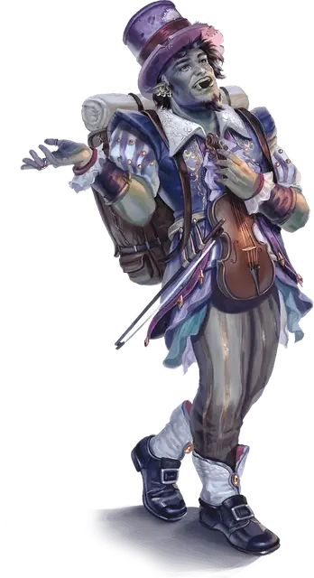

Ухмылка
Grinner

Золотая Ухмылка зародились в далекой стране Тал'Дорей, обмениваясь секретными сообщениями через сеть бардов и менестрелей, чтобы подорвать авторитарное правление жесткого короля. Сегодня Тал'Дорей — относительно мирная республика, и некоторые Ухмылки стали беспокойными, ожидая, когда тирания снова поднимет свою уродливую голову. Группа таких Ухмылок отправилась на Побережье Менажери и создала сеть секретных баз в городах Кловис Конкорд, откуда они в настоящее время пробиваются в высшие эшелоны Двендалийской Империи.
Вы Ухмылка. Ваша цель — распространять свободу и вселять надежду — или, со временем, революцию — в сердца угнетенных.
Владение навыками: Обман, Выступление.
Владение инструментами: Один вид музыкального инструмента, воровские инструменты.
Снаряжение: Комплект отличной одежды, набор для грима, музыкальный инструмент на ваш выбор, позолоченное кольцо с изображением улыбающегося лица, кошель с 15 зм.
Любимая песня-код
Все члены Золотой Ухмылки выучили несколько народных песен в своих путешествиях и используют эти песни, чтобы отправлять секретные коды и предупреждать товарищей-Ухмылок об опасности. Выберите любимую песню или совершите бросок по таблице «Любимые песни-коды».
| к6 | Любимая песня-код |
| 1 | Зан возвращается. Эта обнадёживающая народная песня Тал'Дорей провозглашает неизбежное возвращение справедливого правителя. Используйте её для поиска потенциальных союзников. |
| 2 | Раздуть огонь на побережье. Шумная боевая песня с Кловис Конкорд, в которой рассказывается о взрывах пиратских кораблей. Используйте её, чтобы поощрить битву. |
| 3 | Тише! Впереди драконы. Эта народная песня Тал'Дорей повествует об ужасах дней после вторжения красного дракона по имени Пепельный Король. Используйте её, чтобы поощрять осторожность в словах и поступках. |
| 4 | Пусть меч ржавеет. Эта песня, антивоенный гимн из Маркет (Marquet), имеет неопределенное происхождение. Используйте её, чтобы помочь подавить жестокие столкновения. |
| 5 | Пей глубже, Маленькая Колибри. Эта песня, представляющая собой пьянящее рондо с Берега Менажери, рассказывает историю о молодом человеке, который напился так сильно, что, проснувшись, обнаружил, что спрятался на корабле. Используйте её, чтобы поощрить бдительность в социальных ситуациях. |
| 6 | Панихида по Изумрудному огню. В этой эльфийской песне якобы тысячи малоизвестных куплетов. Используйте первые два стиха, чтобы сообщить о смерти или поражении. |
УМЕНИЕ: Баллада об ухмыляющемся дураке
Как и любая Ухмылка, вы знаете, как найти убежище. В любом городе с населением 10 000 человек и более, на Побережье Менажери или на землях Двендалийской Империи можно сыграть «Балладу об ухмыляющемся дураке» в крупной таверне или постоялом дворе. Член Золотых Ухмылок найдёт вас и приютит вас и любых спутников, за которых вы поручитесь. Покрывательство может прекратится, если прятать вас станет слишком опасно, на усмотрение Мастера.
Это умение нужно использовать с осторожностью, ибо не все, кто знает балладу, являются вашими друзьями. Некоторые из них предатели, контрразведчики или агенты тирании.
Персонализация
Ухмылки обучены искусству секретности и намёков и умеют прятаться на виду, будучи самым громким и ярким человеком в комнате. Их навыки в уловках и бою хорошо подходят для авантюрного образа жизни, а путешествие с наёмниками и охотниками за сокровищами создает удобный предлог для путешествия по землям, согбенным тиранией.
| к8 | Черта характера |
| 1 | Я люблю быть в центре внимания. Все, посмотрите на меня! |
| 2 | Дай мне выпить, и я стану твоим другом. |
| 3 | Расскажите мне о себе. Я чертовски хороший слушатель. |
| 4 | Я ненавижу начинать драки, но я люблю их заканчивать. |
| 5 | Я не могу сидеть на месте. |
| 6 | Я всегда напеваю старую мелодию из своего прошлого. |
| 7 | Когда у меня нет причин улыбаться, я несчастен. |
| 8 | Я такой счастливчик, что вы этому не поверите. |
| к6 | Идеал |
| 1 | Революция. Тираны должны пасть любой ценой. (Хаотичный) |
| 2 | Сострадание. Единственный способ сделать мир лучше — совершать маленькие добрые дела. (Добрый) |
| 3 | Справедливость. Нация, построенная на справедливом фундаменте, поддержит свободу для всех. (Законный) |
| 4 | Выражение. Музыка, радость и смех – вот ключи к свободе. (Добрый) |
| 5 | Самоопределение. Люди должны быть свободны делать то, что им нравится. (Хаотичный) |
| 6 | Бдительность. Свободных людей нужно тщательно учить, чтобы они не были введены в заблуждение. (Нейтральный) |
| к6 | Привязанность |
| 1 | Я потерял кого-то важного из-за агента Двендалийской Империи. Этот режим падет. |
| 2 | Первыми, кто пострадает от этой войны, будут простые люди. Я должен защитить их. |
| 3 | Музыка помогла мне пережить тёмный период моей жизни. Теперь я буду использовать музыку, чтобы изменить мир. |
| 4 | Я буду известен как величайший шпион, который когда-либо жил. |
| 5 | Вся жизнь дорога мне. Я знаю, что могу изменить мир, не лишая человека жизни. |
| 6 | Элита в своих башнях из слоновой кости не понимает, как мы страдаем. Я намерен им это продемонстрировать. |
| к6 | Слабость |
| 1 | Я ни разу в жизни не солгал. Что? Нет, я не скрещиваю пальцы! |
| 2 | Я делаю все по-крупному! Тонкость? Я не знаю смысла тонкости! О, это проблема? |
| 3 | Быть шпионом в военное время очень больно. Я видел так много страданий, я думаю, что схожу с ума. |
| 4 | Я не могу сосредоточиться на своей миссии. Я просто хочу кутить, петь и играть! |
| 5 | Да, это моё имя. Да, я шпион Ухмылок. Кто заботится о том, чтобы оставаться под прикрытием? |
| 6 | Я не могу позволить себе доверять никому. Совсем. Никому. |